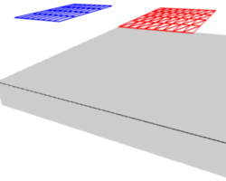
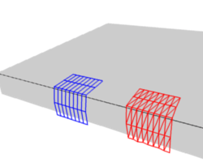

Внутрішньо -- Interior¶
{kind=link}
Вершини та сили уздовж їх з'єднувальних ребер.
To create a connection between the vertices of a soft body object there have to be forces that hold the vertices together. These forces are effective along the edges in a mesh, the connections between the vertices. The forces act like a spring. Fig. Вершини та сили уздовж їх з'єднувальних ребер. illustrates how a 3×3 grid of vertices (a mesh plane in Blender) are connected in a soft body simulation.
Але дві вершини можуть вільно обертатися, якщо ви не створите додаткові ребрам між ними. Ви коли-небудь намагалися збудувати стелаж з чотирьох окремих дошок? Ну, не робіть цього, він буде не стабільним. Логічним методом вберегти тіло від згортання буде створити додаткові ребрам між його вершинами. Це досить добре працює, але може відчутно змінити топології вашої сіті.

Додаткові сили з увімкненою опцією Stiff Quads.
Luckily, Blender allows to define additional virtual connections. On one hand we can define virtual connections between the diagonal edges of a quad face (Stiff Quads Fig. Додаткові сили з увімкненою опцією Stiff Quads.), on the other hand we can define virtual connections between a vertex and any vertices connected to its neighbors' Bending Stiffness. In other words, the amount of bend that is allowed between a vertex and any other vertex that is separated by two edge connections.
Ребра -- Edges¶
Орієнтир -- Reference
| Panel: |
|---|
Характеристики ребер задаються у властивостях Soft Body Edge.
- Вжити Ребра -- Use Edges
- Дозволяє ребрам Сітьового Об'єкта діяти як пружини.
Пружини -- Springs¶
- Виштовх -- Pull
- The spring stiffness for edges (how much the edges are allowed to stretch). A low value means very weak springs (a very elastic material), a high value is a strong spring (a stiffer material) that resists being pulled apart. 0.5 is latex, 0.9 is like a sweater, 0.999 is a highly-starched napkin or leather. The soft body simulation tends to get unstable if you use a value of 0.999, so you should lower this value a bit if that happens.
- Уштовх -- Push
- How much the soft body resists being scrunched together, like a compression spring. Low values for fabric, high values for inflated objects and stiff material.
- Згасання -- Damp
- Тертя для пружин ребер. Високі значення (макс -- 50) дає згасання ефектів Push / Pull та заспокоює фізику тканин.
- Пластичність -- Plasticity
- Постійне деформування об'єкта після зіткнення. Вершини займають нову позицію без застосування модифікатора.
- Згинання -- Bending
- Ця опція створює віртуальні з'єднання між вершиною та вершиною, з'єднаною з її сусідами. Це включає діагональні ребра також. Згасання застосовується також до цих з'єднань.
- Довжина -- Length
- The edges can shrink or be blown up. This value is given in percent, 0 disables this function. 100% means no change, the body keeps 100% of his size.
Тугість 4-бічників -- Stiff Quads¶
- Вжити Тугість 4-бічників -- Use Stiff Quads
- Для чотирибічних граней як пружини використовуються діагональні ребра. Це зупиняє повне згортання чотирибічних граней при зіткненнях (що стається в іншому випадку).
- Косування -- Shear
- Тугість віртуальних пружин для 4-бічних граней.
Поради¶
Запобігання згортанню¶
Тугість 4-бічників -- Stiff Quads¶
Для показу ефект різних устав ребер ми використали два куби (синій: тільки чотирибічники, червоний: тільки трибічники) та дозволили їм падати без будь-якої цілі на площину (як укласти зіткнення показано на сторінці Collisions).

Кадр 1. |

Кадр 36. |

Кадр 401. |
На Ілюстрації Без Stiff Quads -- Stiff Quads.. використовуються стандартні устави (без Stiff Quads). Куб «лише з 4-бічників» буде згортатися повністю, а куб з 3-бічників збереже свою форму, хоча він деформується тимчасово через сили, що створюються у ході зіткнення.
|
Кадр 1. |

Кадр 36. |

Кадр 401. |
На Ілюстрації Із Stiff Quads -- Stiff Quads. Stiff Quads активовано (для обох кубів). Обидва куби зберігають свою форму, тут немає відмінності для червоного куба, оскільки він взагалі немає 4-бічників.
|
Кадр 1. |

Кадр 36. |

Кадр 401. |
Тугість Згинання -- Bending Stiffness¶
Другий метод зупинити об'єкт від згортання -- це змінити його параметр тугості згинання Bending. Це включає діагональні ребра (згасання також застосовується до цих з'єднань).
На Ілюстрації Bending Stiffness. Blend-file. активовано Bending з уставою сили як 1. Тепер два куби більш жорсткі.

Дві площини збираються стикнутися з іншим об'єктом. |

Без тугості згинання, Кадр 101. |

Висока тугість згинання (10, Кадр 101. |
{kind=link}
{kind=link}
Тугість згинання може також вживатися, якщо ви хочете зробити підподілену площину подібною на дошку. Без Bending грані можуть вільно обертатися одна перед одною, як шарніри, Ілюстрація Без тугості згинання, Кадр 101.. Там не буде жодних змін в імітації, якщо ви активували Stiff Quads, оскільки грані не деформуються взагалі у цьому прикладі.
Тугість згинання є силою, необхідною для деформування площини.